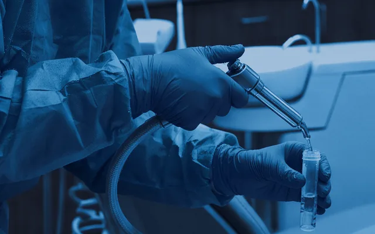

Waterline testing
Waterline testing, operatory by operatory.
We sample the water in each dental unit and report the bacteria count against the standard.

Photo is illustrative.
What we check
- Water samples from each dental unit
- Bacteria count for each line, in CFU/mL
- Each result against the 500 CFU/mL standard
- Your waterline test log and past results
- Your waterline maintenance records
- Recent repairs or plumbing changes
What you get
- A written report, line by line
- Every item marked: meets standard or action needed, with action items first
- A clear next step for each item that needs one
In Georgia? The waterline rule, in plain English
See where your practice stands.
Book a 15-minute call. We’ll explain what a visit covers. No obligation.